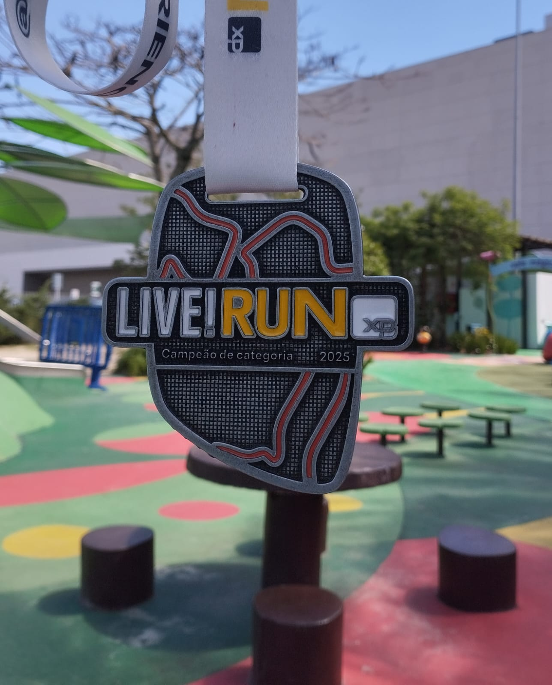
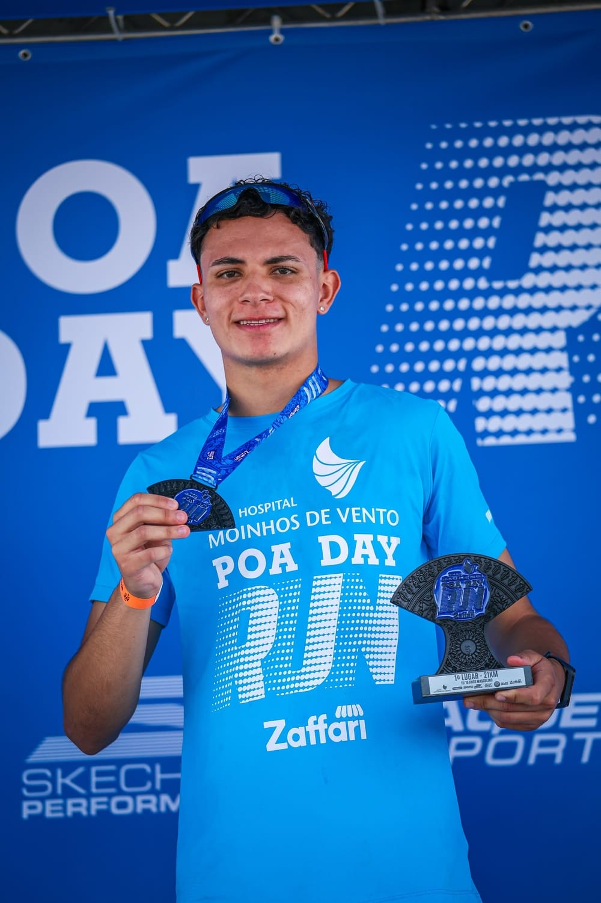
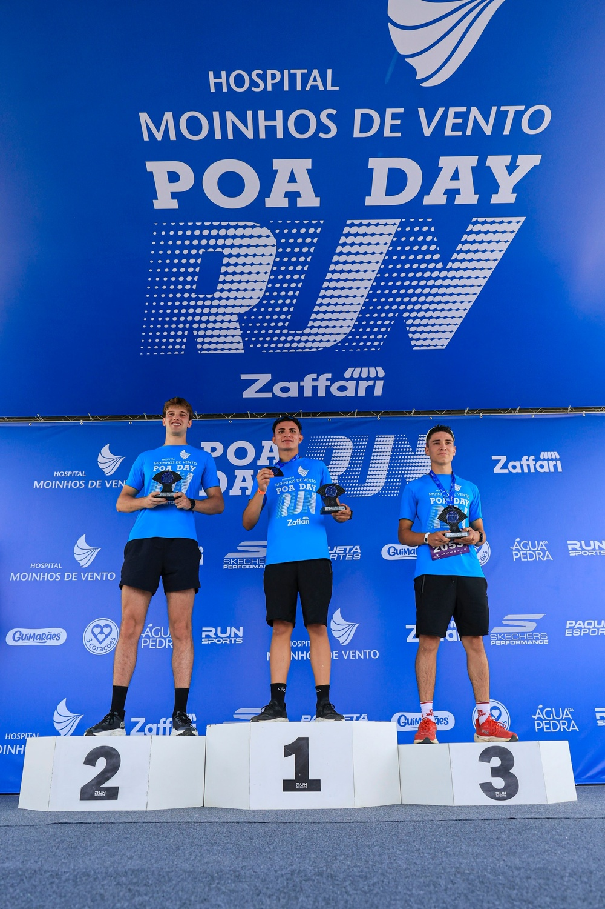

Conquistas Individuais
LIVE!RUN XP - Porto Alegre/RS (21k)
1º categoria - Masculino até 19 anos

Poa Day Run 3ª Etapa - Porto Alegre/RS (21k)
1º categoria - Masculino 18/19 anos


| Prova | Distância | Pace Médio | Tempo Total | Posição Geral | Posição CAT | Data |
|---|---|---|---|---|---|---|
| LIVE!RUN XP - Porto Alegre/RS | 21km | 05:04/km | 01:46:21 | 182º | 1º | 28/09/2025 |
| Poa Day Run 3ª Etapa | 21km | 04:55/km | 01:43:18 | 134º | 1º | 30/11/2025 |
| Inclusão - Instituto Olga | 10km | 04:36/km | 00:45:58 | 243º | Sem Cat | 22/03/2026 |
| LIVE!RUN XP - Brasília/DF | 21km | 04:51/km | 01:41:55 | 115º | 7º | 19/04/2026 |
| Wings For Life - Brasília/DF | 22,4km | 05:20/km | 01:59:38 | Sem Geral | Sem Cat | 10/05/2026 |
1º categoria - Masculino até 19 anos

1º categoria - Masculino 18/19 anos

